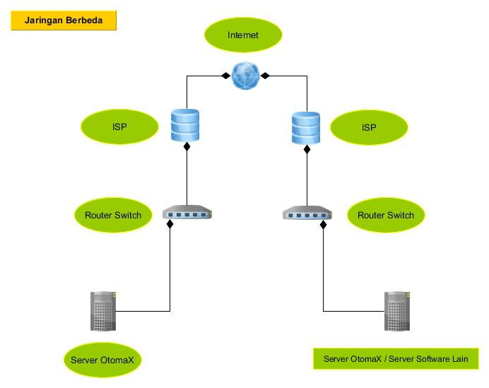
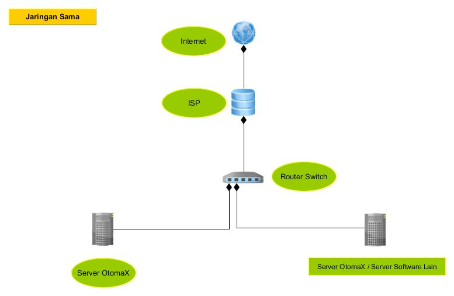

Transaksi via IP OtomaX (3.6.8)
Transaksi via IP OtomaX sebagai sedoter sebenarnya sudah dapat dilakukan di OtomaX sebelum versi 3.6.8 (tepatnya mulai versi 3.1.3) dan berlaku untuk semua edisi berbayar, namun mengharuskan pengguna membuat link report sendiri untuk menerima reply dari supplier. Dengan hadirnya versi 3.6.8 tidak diperlukan lagi membuat link tersebut, karena sudah disediakan di dalam OtomaX.
Selain fitur di atas di versi 3.6.8 hadir modul baru, yakni modul IP Center dimana ini berguna untuk menerima transaksi via IP, sehingga mitra - mitra Anda dapat host to host ke Anda melalui IP.
Perlu diketahui fitur link report dan modul IP Center itu hanya berlaku untuk OtomaX edisi Enterprise, Ultimate dan server kategori cabang: Mars, Venus, Jupiter. Oleh karena itu bila Edisi OtomaX Anda bukan edisi tersebut dan Anda menginginkan transaksi via IP sebaiknya melakukan Upgrade OtomaX, klik disini; dan jika Anda ingin membeli OtomaX baru klik disini.
Transaksi via IP merupakan transaksi antara satu IP dengan IP lainnya, sehingga terdapat beberapa hal pendukung yang harus dipenuhi agar dapat transaksi via IP, yakni:
- IP Publik Statis
Ini dibutuhkan baik sebagai sedoter maupun supplier; dan dibutuhkan jika IP lawan (Server lawan) berada di jaringan berbeda, dan tidak dibutuhkan jika berada di jaringan sama. Perhatikan gambar di bawah ini.
 
Untuk mendapatkan IP Publik Statis silahkan kontak ISP (Internet Service Provider) kesayangan Anda, misalnya Telkom Indonesia, First Media, Biznet, MNC Play, MyRepublik dan lain-lain.
- Router
Untuk mendapatkannya silahkan beli di toko komputer, adapun untuk pemasangannya mohon baca manual book yang disertakan dalam unit, atau tanyakan ke penjualnya.
- Spesifikasi transaksi IP Supplier
Hal ini meliputi: IP dan Port transaksi, Jenis Metode (XML, HTTPGET, HTTPPOST atau lainnya), Syntax transaksi, dan alur kerja. Untuk mengetahuinya silahkan kontak supplier Anda.
Bila hal-hal pendukung di atas sudah terpenuhi, Anda dapat melakukan transaksi via IP baik sebagai sedoter maupun supplier.
Kemudian, bila Anda memiliki pertanyaan-pertanyaan seputar tehnis transaksi via IP di OtomaX silahkan kirimkan pertanyaan Anda ke alamat email support@otomax-software.com atau klik disini.
Catatan 1: Sedoter ialah lawan dari supplier, yakni server yang mengambil stok atau host to host ke server lain; sedangkan Supplier ialah server yang stoknya diambil oleh server lain.
Catatan 2: Mulai versi 3.6.9 Anda dapat transaksi IP tanpa harus memiliki IP Public Statis, yakni dengan menggunakan IP Gateway. Info lengkap klik disini.